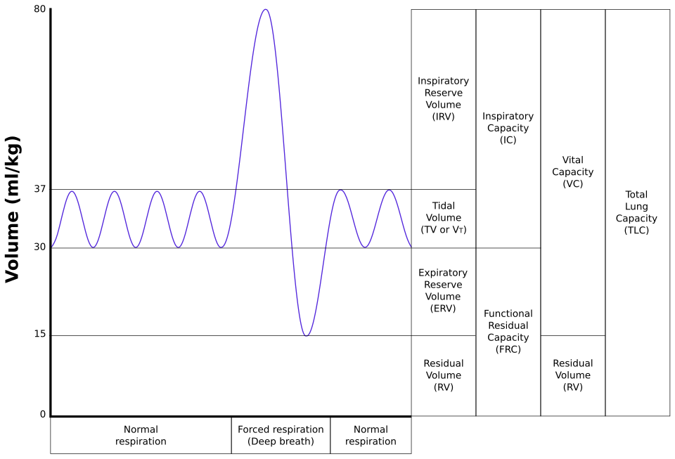
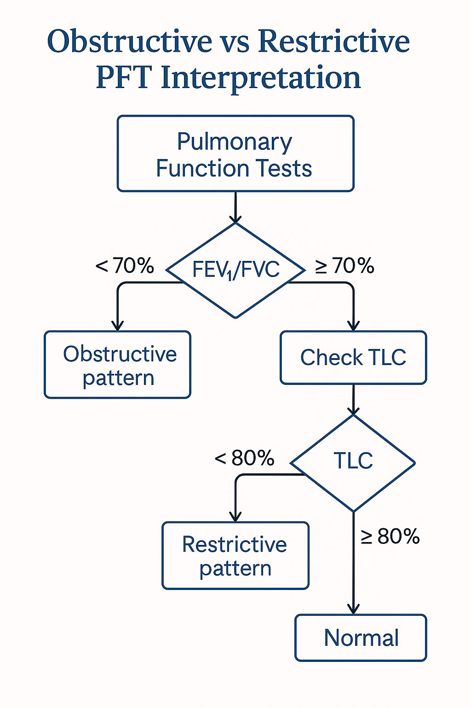

胸腔基礎
Tuesday, April 15, 2025
12:02 AM
|
聽診音調 |
意義 |
|
鼓音（Hyperresonance） |
氣胸、肺氣腫 |
|
濁音（Dullness） |
胸水、肺實變 |
|
叩診減弱但音調正常 |
肺炎或纖維化 |
|
聽診音 |
特徵說明 |
常見疾病 |
|
Wheezing（喘鳴） |
喘音，主動期呼氣；多音性（Asthma）、單音性（腫瘤） |
Asthma、COPD、CHF（周邊支氣管水腫） |
|
Rhonchi（濕哮） |
中等氣道分泌物濃稠、咻咻聲 |
急性支氣管炎、COPD、支氣管擴張症 |
|
Stridor（吸氣高音） |
頸部聽得到，單音性，吸氣期音 |
上呼吸道阻塞（如聲門水腫、異物） |
|
Crackles（Rales） |
吸氣時出現，有乾濕之分 |
肺水腫（濕）、IPF（Velcro rales） |
|
Bronchial breath sound |
實變區出現氣管樣呼吸音 |
肺炎（Lobar pneumonia） |
|
Absent breath sounds |
聽不到呼吸音 |
氣胸、胸水、大腫瘤、重度COPD |
|
Egophony（共鳴音） |
「EEE」變「AHH」 |
肺實變（如肺炎） |
|
Whispered pectoriloquy（低聲語音清晰） |
小聲講話卻清楚可聽見 |
肺實變 |
|
組成系統 |
功能說明 |
|
肺（Lung） |
含肺泡與氣道，是氣體交換的場所 |
|
神經肌肉系統（Neuromuscular system） |
控制呼吸肌產生運動（主動） |
|
胸壁（Chest wall） |
包含肋骨、胸肌、橫膈、腹部、心臟等（被動） |

|
基本肺容積名稱 |
簡寫 |
定義 |
常見數值（成人） |
|
潮氣容積 |
TV (Tidal Volume) |
每次安靜呼吸進出肺的氣體量 |
約 500 mL |
|
吸氣儲備容積 |
IRV (Inspiratory Reserve Volume) |
吸氣後再用力吸入的最大量 |
約 3000 mL |
|
呼氣儲備容積 |
ERV (Expiratory Reserve Volume) |
呼氣後再用力呼出的最大量 |
約 1100 mL |
|
殘氣容積 |
RV (Residual Volume) |
用力呼氣後肺內仍殘留之氣體量 |
約 1200 mL |
|
肺容量名稱 |
簡寫 |
臨床意義 |
組成 |
|
肺總容量 |
TLC |
肺可容納的最大氣量 |
TV + IRV + ERV + RV |
|
肺活量 |
VC (Vital Capacity) |
最大吸氣與呼氣間的容積 |
TV + IRV + ERV |
|
功能性殘氣量 |
FRC (Functional Residual Capacity) |
正常呼氣後肺內剩餘的氣體量 |
ERV + RV |
|
吸氣容量 |
IC (Inspiratory Capacity) |
安靜呼氣後能吸入的最大氣體量 |
TV + IRV |
|
名稱 |
簡寫 |
說明與意義 |
|
肺活量 |
VC / FVC |
最大吸氣後完全呼氣之容量 |
|
第一秒用力呼氣容積 |
FEV₁ |
最大努力呼氣第一秒排出的氣體量 |
|
FEV₁/FVC比值 |
- |
最常用於區分阻塞型肺病，正常約 >70% |
|
肺總容量 |
TLC |
吸氣至極限之最大肺容量（量測限制型疾病） |
|
功能性殘氣量 |
FRC |
正常呼氣後肺內剩餘空氣量（體積過度膨脹指標） |
|
殘氣容積 |
RV |
肺內無法排出的氣體，需特殊檢查才能測出 |
|
氣體擴散能力 |
DLCO |
CO的單次吸氣法，用於評估氣體交換（如間質病變、肺氣腫） |

|
疾病 |
FEV₁/FVC |
TLC |
DLCO |
特殊變化 |
|
Asthma |
↓ |
正常或↑ |
正常或↑ |
可逆性氣流受限 |
|
COPD（Emphysema） |
↓ |
↑ |
↓ |
氣體交換表面積減少 |
|
Restrictive（ILD） |
正常或↑ |
↓ |
↓ |
肺彈性減少，氣體交換障礙 |
|
Obesity |
正常 |
↓ |
正常 |
胸壁限制型通氣障礙 |
|
Myasthenia Gravis |
正常 |
↓ |
正常 |
呼吸肌無力造成 TLC 降低 |
|
Pulmonary Hypertension |
正常 |
正常 |
↓ |
僅 DLCO 下降 |
|
DLCO 下降 |
DLCO 上升 |
|
肺氣腫、肺纖維化 |
肺出血、心衰（急性）、氣喘、紅血球過多症 |
|
肺高壓、貧血 |
— |
|
指標 |
正常參考 |
異常意義 |
|
FEV1/FVC |
>70% |
↓ → Obstruction |
|
TLC |
80–120% |
↓ → Restriction |
|
DLCO |
>75% |
↓ → 間質性肺病、肺高壓 |
|
型態 |
描述 |
臨床意義 |
|
高V/Q |
通氣正常，但灌流下降 |
肺栓塞（Pulmonary Embolism） |
|
低V/Q |
灌流正常，但通氣下降 |
肺炎、肺水腫、小氣道疾病 |
|
真正分流（Shunt） |
無通氣（肺泡完全塌陷或充水）但仍有灌流 |
ARDS、肺炎、肺水腫 |
|
死腔通氣增加 |
通氣至無灌流區域 |
肺栓塞、嚴重低血壓 |
|
機制 |
對氧氣補充反應 |
|
低V/Q |
有改善 |
|
Shunt |
效果不佳（血氧無法大幅上升） |
|
機制 |
特色 |
臨床代表 |
|
低吸入氧氣濃度（↓FiO₂） |
高海拔或吸入低氧氣體 |
高山症 |
|
肺泡低通氣（Alveolar Hypoventilation） |
通氣不足造成氧氣下降，CO₂上升 |
神經肌肉疾病、麻醉過度 |
|
V/Q 不均 |
通氣與灌流不匹配 |
COPD、肺炎 |
|
Shunt |
無法改善的缺氧 |
ARDS、重症肺炎 |
|
擴散障礙（Diffusion limitation） |
罕見，通常伴隨重症ILD |
間質性肺病 |
|
疾病範例 |
生理異常 |
PFT特徵 |
DLCO變化 |
|
IPF（特發性肺纖維化） |
肺回縮力↑，通氣受限 |
↓TLC, ↓FVC, ↓RV |
↓DLCO |
|
中度肥胖症（Moderate Obesity） |
胸壁外擴能力下降 |
↓FRC，TLC正常或稍↓ |
正常DLCO |
|
重症Myasthenia Gravis |
呼吸肌無力，動作範圍受限 |
↓TLC，↑RV |
正常DLCO |
|
急性氣喘發作（Acute Asthma） |
小氣道狹窄 |
↓FEV1, ↓FEV1/FVC，↑Raw |
正常或輕微↑DLCO |
|
嚴重肺氣腫（Severe Emphysema） |
肺回縮力↓，動態肺氣腫 |
↑TLC, ↑RV, ↓FEV1, ↓FVC |
↓DLCO |
|
項目 |
說明 |
|
基本觀察方向 |
PA + Lateral 是標準；臥位片用於重症病人（解析度差） |
|
特殊角度 |
Lateral decubitus（判斷游離胸水）、Apical lordotic（上肺病灶） |
|
優點 |
快速、普及；適合篩檢肺炎、肺水腫、氣胸等 |
|
限制 |
組織重疊多、解析度不高、心臟易放大（AP view） |
|
用途 |
說明 |
|
胸腔病灶定位 |
協助引導胸腔穿刺、引流、肺周邊病灶定位 |
|
橫膈功能 |
可評估橫膈活動 |
|
病灶評估 |
快速診斷氣胸、胸水、肺鬱血（肺水腫B-lines） |
|
特色 |
無輻射、可床邊操作（POCUS）、敏感度高於X光 |
|
項目 |
說明 |
|
V/Q Scan |
用於診斷肺栓塞（Perfusion缺損但Ventilation正常） |
|
輔助用途 |
評估手術後肺功能（如肺葉切除前） |
|
限制 |
逐漸被CTPA取代；特異度有限，解釋須依臨床結合 |
|
項目 |
說明 |
|
CT用途 |
肺癌分期、肺間質病變（如UIP）、肺結節評估 |
|
MDCT |
多切面、多偵測器 → 提高解析度、重建3D圖像 |
|
CTPA（CT Pulmonary Angiography） |
肺栓塞檢查首選 |
|
Low-dose CT |
肺癌篩檢（建議對象：55–80歲、30 pack-year 吸菸史） |
|
用途 |
說明 |
|
肺癌分期 |
利用高代謝率的[18F]-FDG示踪劑判斷惡性病灶、淋巴轉移 |
|
Hybrid PET/CT |
將代謝活動與解剖結構疊合 → 提高診斷精準度 |
|
限制 |
小於1 cm 或低代謝腫瘤（如typical carcinoid）可能偽陰性 炎症或肉芽腫可能偽陽性 |
|
種類 |
說明 |
|
誘導痰（Induced sputum） |
利用高張鹽水霧化誘發，適合評估PJP |
|
常見應用 |
細菌、黴菌、分枝桿菌（TB）、病毒、惡性細胞檢查 |
|
類別 |
說明 |
|
Flexible Fiberoptic Bronchoscopy |
可進行洗液（BAL）、刷檢（brushing）、活檢（biopsy） |
|
Transbronchial Biopsy (TBBx) |
取得肺泡組織，用於間質性肺病或周邊病灶 |
|
Transbronchial Needle Aspiration (TBNA) |
經氣管壁針吸淋巴結，評估肺癌分期 |
|
EBUS-TBNA |
超音波導引針吸，實時定位→取樣精準 |
|
Radial Probe EBUS (RP-EBUS) |
增加對周邊肺結節之診斷率，可結合ENB導航 |
|
技術 |
特點 |
|
Autofluorescence Bronchoscopy (AFB) |
偵測癌前病變 |
|
Narrow Band Imaging (NBI) |
提高血管顯影，區辨惡性病變 |
|
Optical Coherence Tomography (OCT) |
細胞層級斷層影像（高解析度） |
|
Confocal Laser Microscopy (CFM) |
即時高解析顯微影像，近似活檢 |
|
技術 |
說明 |
|
Mediastinoscopy |
取樣2R/4R等縱膈前方淋巴結，肺癌分期用 |
|
Mediastinotomy（Chamberlain procedure） |
取樣5/6區塊淋巴結 |
|
VATS（Video-Assisted Thoracoscopic Surgery） |
微創手術，可進行肺活檢、肺葉切除、胸膜處理 |
|
Thoracotomy |
傳統開胸手術，適用於深部或靠近重要結構之病灶 |
使用 OneNote 建立。
{kind=link}